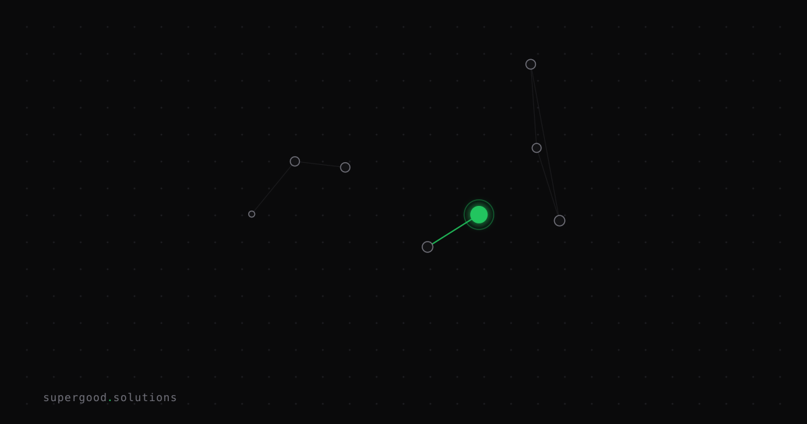

Your Enterprise Agents Discover Tools Through Vibes
TL;DR: Multi-agent systems fail at scale not because of model quality but because agents decide which tools to call based on vibes — fuzzy natural language descriptions instead of machine-readable contracts. Fix the service layer, not the prompt.
Key Insight
Every enterprise multi-agent system has a hidden assumption baked into it: that a language model can reliably infer what a tool does, when to call it, and how to call it from a paragraph of natural language. That assumption holds in demos. It falls apart in production across 10 tools, 3 agents, and a month of schema drift.
The enterprise teams getting this right have stopped treating tool descriptions as documentation and started treating them as contracts — versioned, typed, machine-readable interfaces that agents consume the same way a service consumes an OpenAPI spec.
The teams still struggling are writing paragraphs like: "Use this tool to get customer data when you need it." That's not a contract. That's a vibe. And vibes don't scale.
Why Teams Miss This
The failure mode is invisible until it isn't. In a single-agent prototype with 3 tools, ad-hoc descriptions work fine. The model picks the right tool 95% of the time, and when it doesn't, you tweak the prompt and move on.
Then you go to production. You add agents. You add tools. The tool catalog grows to 20+ entries. Multiple agents now share the same MCP server. One agent's tool call mutates state another agent was reading. A tool description written in January no longer matches the argument schema the underlying service expects in June — nobody updated the description when the API changed.
Research on MCP tool descriptions confirms the mechanism: when descriptions are underspecified or ambiguous, agents select the wrong tool, pass invalid arguments, and take unnecessary intermediate steps. Each failure compounds across a multi-step workflow. By step 6 of a 10-step pipeline, you're not debugging a model problem — you're debugging a contract problem.
The deeper issue is observability. When an agent makes 40 tool calls across 3 MCP servers to complete a task, you need to know the execution path, the latency per tool, and why each tool was selected. Ad-hoc prompting makes that forensics nearly impossible. Structured contracts make it routine.
How to Actually Do It
1. Write schemas before writing agents.
The most reliable pattern from enterprise deployments: define your tool interface as a typed JSON schema before you write the agent that calls it. Treat it like an API contract. Version it. Require a changelog when the schema changes.
{
"name": "get_customer_account",
"description": "Returns a single customer account by ID. Use ONLY for point lookups. Do NOT use for search or filtering — use search_customers instead.",
"inputSchema": {
"type": "object",
"properties": {
"customer_id": {
"type": "string",
"pattern": "^CUS-[0-9]{8}$",
"description": "The canonical customer ID in format CUS-XXXXXXXX"
}
},
"required": ["customer_id"]
}
}Notice what this description does: it tells the agent when NOT to use it as explicitly as when to use it. That disambiguation is load-bearing at scale.
2. Treat MCP as your structured service layer.
Model Context Protocol exists precisely to give agents a standardized, machine-readable interface to external tools. If you're still wiring tools through raw function descriptions in a system prompt, you're doing the equivalent of hardcoding API keys — it works until it doesn't, and when it breaks it breaks badly.
MCP servers expose capabilities in a structured format. Your agents query the server for available tools and get back typed schemas, not paragraphs. The protocol handles capability discovery; your schema handles correctness.
3. Build a golden prompt set for each tool.
A practical pattern from production: create 5-10 test queries per tool that should (and shouldn't) trigger it. Run them against your agent before any schema change ships. If the agent calls the wrong tool for any of these queries, the description is ambiguous — fix the contract, not the prompt.
GOLDEN_SET = [
# should trigger get_customer_account
{"query": "pull the account for CUS-00001234", "expected_tool": "get_customer_account"},
# should NOT — this is a search
{"query": "find customers in the Pacific Northwest", "expected_tool": "search_customers"},
# edge case
{"query": "get me everything on John Smith", "expected_tool": "search_customers"},
]4. Add explicit "not for" clauses to descriptions.
The single highest-leverage edit you can make to an existing tool description: add a sentence starting with "Do NOT use this tool when..." Models respond well to explicit exclusions, and it eliminates the ambiguity that causes wrong-tool selection.
5. Gate new tool exposure at the service layer.
When a new tool is added to your MCP server, agents will discover it automatically — which is the point, but it also means an agent can start calling a tool before you've validated the behavior. A useful pattern: new tools are added to the server with a status: "beta" flag, and your gateway returns a structured "tool not available in this context" response until you explicitly promote it. Explicit is better than automatic when production state is involved.
What We've Learned
The next experiment worth running: pick your three most-called agent tools, add explicit "do not use when" clauses to their descriptions, and measure wrong-tool-selection rate over a week. Most teams that do this see a meaningful drop in cascading failures — not because the model got smarter, but because the contract got tighter.
If you're building more than two agents sharing a tool catalog, the time to adopt MCP or an equivalent structured service layer is now, not after the third production incident.
Sources
- Bridging Protocol and Production: MCP Design Patterns (arXiv)
- MCP Tool Descriptions Are Smelly — arXiv study on tool description quality
- MCP: What's Actually Working, What's Breaking (Agent Build Newsletter)
- Multi-Agent Frameworks for Enterprise AI (adopt.ai)
- OpenAI Agents SDK — MCP integration docs